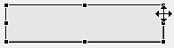

The following is a list of the key bindings supported by the SDS Display Editor.
Note that the Control key is the Command key in Mac OS.
| Action | Description | Keyboard shortcut |
|---|---|---|
| New | Creates a new display. (This will open the New wizard, which also allows you to create other resources.) | Ctrl+N |
| Save | Saves the current display. | Ctrl+S |
| Action | Description | Keyboard shortcut |
|---|---|---|
| Cut | Cuts the selected widget to the clipboard. | Ctrl+X |
| Copy | Copies the selected widget to the clipboard. | Ctrl+C |
| Paste | Pastes widgets from the clipboard. | Ctrl+V |
| Undo | Undoes the last edit command. | Ctrl+Z |
| Redo | Redoes an action that was previously undone. | Ctrl+Y |
| Select All | Selects all widgets in the current editor. | Ctrl+A |
| Delete | Deletes the selected widgets. | Delete |
To select widgets, simply use the arrow keys (cursor keys) on your keyboard. By holding the Control key down while pressing the arrow keys, you can change just the focus to another widget without selecting it. You can then press Ctrl+Space to select widgets individually. This allows you to select multiple widgets using the keyboard.
 To move and resize widgets, press the period key. This will switch the editor into the move mode for the currently selected widgets. Move mode is indicated by an indicator icon displayed on top of the widget (see screenshot). To commit the widget to its new position, press enter. You can also press escape to cancel the move operation.
By pressing the period key multiple times, you can cycle from move mode through the different resize modes. The indicator icon will appear on top of the respective resize handle.